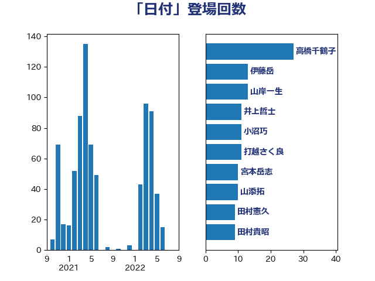

単語「日付」

| 高橋千鶴子 | 日本共産党 | 27 回 |
| 伊藤岳 | 日本共産党 | 13 回 |
| 山岸一生 | 立憲民主党 | 13 回 |
| 井上哲士 | 日本共産党 | 11 回 |
| 小沼巧 | 立憲民主党 | 11 回 |
| 打越さく良 | 立憲民主党 | 11 回 |
| 宮本岳志 | 日本共産党 | 10 回 |
| 山添拓 | 日本共産党 | 10 回 |
| 田村憲久 | 自由民主党 | 9 回 |
| 田村貴昭 | 日本共産党 | 9 回 |
| 後藤茂之 | 自由民主党 | 8 回 |
| 穀田恵二 | 日本共産党 | 8 回 |
| 階猛 | 立憲民主党 | 8 回 |
| 塩川鉄也 | 日本共産党 | 7 回 |
| 大西健介 | 立憲民主党 | 7 回 |
| 小西洋之 | 立憲民主党 | 7 回 |
| 山本博司 | 公明党 | 7 回 |
| 笠井亮 | 日本共産党 | 7 回 |
| 萩生田光一 | 自由民主党 | 7 回 |
| 吉川沙織 | 立憲民主党 | 6 回 |
| 武田良太 | 自由民主党 | 6 回 |
| 石垣のりこ | 立憲民主党 | 6 回 |
| 紙智子 | 日本共産党 | 6 回 |
| 芳賀道也 | 国民民主党 | 6 回 |
| 平井卓也 | 自由民主党 | 5 回 |
| 杉尾秀哉 | 立憲民主党 | 5 回 |
| 林芳正 | 自由民主党 | 5 回 |
| 田村まみ | 国民民主党 | 5 回 |
| 赤嶺政賢 | 日本共産党 | 5 回 |
| 高良鉄美 | 無所属 | 5 回 |
| 伊藤孝恵 | 国民民主党 | 4 回 |
| 岩渕友 | 日本共産党 | 4 回 |
| 末松信介 | 自由民主党 | 4 回 |
| 梅村みずほ | 日本維新の会 | 4 回 |
| 牧義夫 | 立憲民主党 | 4 回 |
| 石橋通宏 | 立憲民主党 | 4 回 |
| 足立康史 | 日本維新の会 | 4 回 |
| 三原じゅん子 | 自由民主党 | 3 回 |
| 伊波洋一 | 無所属 | 3 回 |
| 川田龍平 | 立憲民主党 | 3 回 |
| 木原誠二 | 自由民主党 | 3 回 |
| 河野太郎 | 自由民主党 | 3 回 |
| 米山隆一 | 立憲民主党 | 3 回 |
| 美延映夫 | 日本維新の会 | 3 回 |
| 藤井比早之 | 自由民主党 | 3 回 |
| 赤羽一嘉 | 公明党 | 3 回 |
| 野上浩太郎 | 自由民主党 | 3 回 |
| 阿部知子 | 立憲民主党 | 3 回 |
| 倉林明子 | 日本共産党 | 2 回 |
| 加藤勝信 | 自由民主党 | 2 回 |
| 吉田宣弘 | 公明党 | 2 回 |
| 吉田忠智 | 立憲民主党 | 2 回 |
| 城井崇 | 立憲民主党 | 2 回 |
| 奥野総一郎 | 立憲民主党 | 2 回 |
| 宮本徹 | 日本共産党 | 2 回 |
| 小泉進次郎 | 自由民主党 | 2 回 |
| 岸真紀子 | 立憲民主党 | 2 回 |
| 川合孝典 | 国民民主党 | 2 回 |
| 平木大作 | 公明党 | 2 回 |
| 後藤祐一 | 立憲民主党 | 2 回 |
| 杉久武 | 公明党 | 2 回 |
| 松本尚 | 自由民主党 | 2 回 |
| 松野博一 | 自由民主党 | 2 回 |
| 柚木道義 | 立憲民主党 | 2 回 |
| 梶山弘志 | 自由民主党 | 2 回 |
| 渡辺周 | 立憲民主党 | 2 回 |
| 熊谷裕人 | 立憲民主党 | 2 回 |
| 福島みずほ | 社会民主党 | 2 回 |
| 竹谷とし子 | 公明党 | 2 回 |
| 緑川貴士 | 立憲民主党 | 2 回 |
| 舟山康江 | 国民民主党 | 2 回 |
| 谷合正明 | 公明党 | 2 回 |
| 谷田川元 | 立憲民主党 | 2 回 |
| 近藤昭一 | 立憲民主党 | 2 回 |
| 金子恭之 | 自由民主党 | 2 回 |
| 鈴木貴子 | 自由民主党 | 2 回 |
| 鰐淵洋子 | 公明党 | 2 回 |
| おおつき紅葉 | 立憲民主党 | 1 回 |
| 上川陽子 | 自由民主党 | 1 回 |
| 上野賢一郎 | 自由民主党 | 1 回 |
| 丹羽秀樹 | 自由民主党 | 1 回 |
| 井上英孝 | 日本維新の会 | 1 回 |
| 井林辰憲 | 自由民主党 | 1 回 |
| 伊藤忠彦 | 自由民主党 | 1 回 |
| 伴野豊 | 立憲民主党 | 1 回 |
| 加田裕之 | 自由民主党 | 1 回 |
| 勝部賢志 | 立憲民主党 | 1 回 |
| 北神圭朗 | 無所属 | 1 回 |
| 古賀之士 | 立憲民主党 | 1 回 |
| 吉田とも代 | 日本維新の会 | 1 回 |
| 吉田統彦 | 立憲民主党 | 1 回 |
| 吉良よし子 | 日本共産党 | 1 回 |
| 塩田博昭 | 公明党 | 1 回 |
| 大串博志 | 立憲民主党 | 1 回 |
| 大島敦 | 立憲民主党 | 1 回 |
| 安江伸夫 | 公明党 | 1 回 |
| 安達澄 | 無所属 | 1 回 |
| 宮路拓馬 | 自由民主党 | 1 回 |
| 寺田静 | 無所属 | 1 回 |
| 小寺裕雄 | 自由民主党 | 1 回 |
| 小山展弘 | 立憲民主党 | 1 回 |
| 小池晃 | 日本共産党 | 1 回 |
| 小野泰輔 | 日本維新の会 | 1 回 |
| 山下貴司 | 自由民主党 | 1 回 |
| 山下雄平 | 自由民主党 | 1 回 |
| 山岡達丸 | 立憲民主党 | 1 回 |
| 山崎正恭 | 公明党 | 1 回 |
| 山本左近 | 自由民主党 | 1 回 |
| 山田勝彦 | 立憲民主党 | 1 回 |
| 岡本あき子 | 立憲民主党 | 1 回 |
| 岡本三成 | 公明党 | 1 回 |
| 岸信夫 | 自由民主党 | 1 回 |
| 岸田文雄 | 自由民主党 | 1 回 |
| 徳永エリ | 立憲民主党 | 1 回 |
| 志位和夫 | 日本共産党 | 1 回 |
| 斉藤鉄夫 | 公明党 | 1 回 |
| 新垣邦男 | 立憲民主党 | 1 回 |
| 木村英子 | れいわ新選組 | 1 回 |
| 末松義規 | 立憲民主党 | 1 回 |
| 本田太郎 | 自由民主党 | 1 回 |
| 杉本和巳 | 日本維新の会 | 1 回 |
| 東徹 | 日本維新の会 | 1 回 |
| 柳ヶ瀬裕文 | 日本維新の会 | 1 回 |
| 柳本顕 | 自由民主党 | 1 回 |
| 梅村聡 | 日本維新の会 | 1 回 |
| 森屋宏 | 自由民主党 | 1 回 |
| 森屋隆 | 立憲民主党 | 1 回 |
| 森英介 | 自由民主党 | 1 回 |
| 武井俊輔 | 自由民主党 | 1 回 |
| 池畑浩太朗 | 日本維新の会 | 1 回 |
| 津島淳 | 自由民主党 | 1 回 |
| 浜田聡 | NHK党 | 1 回 |
| 浦野靖人 | 日本維新の会 | 1 回 |
| 渡辺孝一 | 自由民主党 | 1 回 |
| 田島麻衣子 | 立憲民主党 | 1 回 |
| 田村智子 | 日本共産党 | 1 回 |
| 石井章 | 日本維新の会 | 1 回 |
| 石川大我 | 立憲民主党 | 1 回 |
| 石橋林太郎 | 自由民主党 | 1 回 |
| 稲富修二 | 立憲民主党 | 1 回 |
| 稲津久 | 公明党 | 1 回 |
| 竹内真二 | 公明党 | 1 回 |
| 篠原孝 | 立憲民主党 | 1 回 |
| 篠原豪 | 立憲民主党 | 1 回 |
| 舩後靖彦 | れいわ新選組 | 1 回 |
| 船橋利実 | 自由民主党 | 1 回 |
| 若宮健嗣 | 自由民主党 | 1 回 |
| 落合貴之 | 立憲民主党 | 1 回 |
| 藤岡隆雄 | 立憲民主党 | 1 回 |
| 西岡秀子 | 国民民主党 | 1 回 |
| 西村康稔 | 自由民主党 | 1 回 |
| 西村智奈美 | 立憲民主党 | 1 回 |
| 重徳和彦 | 立憲民主党 | 1 回 |
| 金子俊平 | 自由民主党 | 1 回 |
| 金子恵美 | 立憲民主党 | 1 回 |
| 鈴木庸介 | 立憲民主党 | 1 回 |
| 長坂康正 | 自由民主党 | 1 回 |
| 長妻昭 | 立憲民主党 | 1 回 |
| 青山大人 | 立憲民主党 | 1 回 |
| 馬場伸幸 | 日本維新の会 | 1 回 |
| 高橋光男 | 公明党 | 1 回 |
| 高鳥修一 | 自由民主党 | 1 回 |